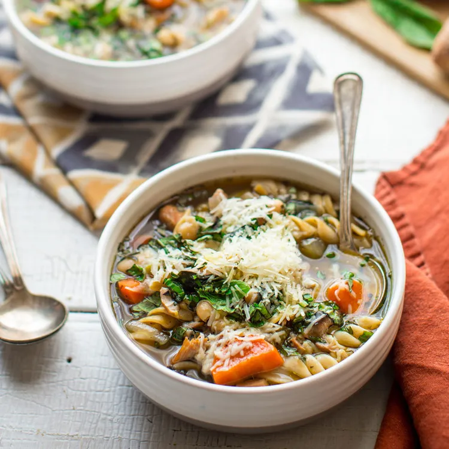
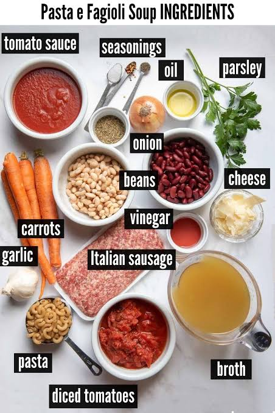
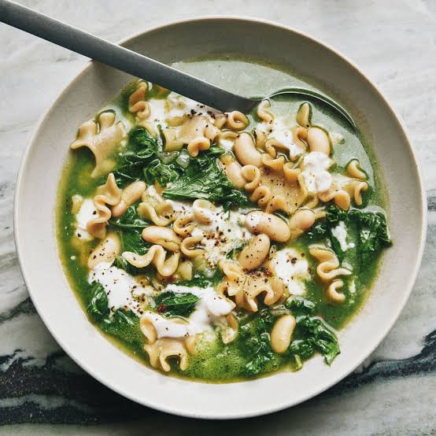

Pasta e Fagioli Soup
This soup comes from Eating Well
and uses the crock pot, so it's easy to make. It's designed to work with the DASH diet, so it's heart healthy and
good for people trying to watch their sodium intake.
This recipe is easy to divide into portions and freeze to have easy weeknight meals a mere microwave away.

Ingredients
- 2 cups Onions: chopped
- 1 cup Carrots: chopped
- 1 cup Celery: chopped
- 1 lb Chicken Thighs: pre-roasted
- 4 cups Rotini Pasta: cooked
- 6 cups Chicken Broth, low-sodium
- 4 tsp Italian Seasoning
- 1/4 tsp Salt
- 1 can White Beans, no salt added
- 4 cups Baby Spinach: washed
- 4 Tbsp Basil: chopped and divided
- 2 Tbsp Extra Vigin Olive Oil
- 1/2 cup Parmigiano-Reggiano Cheese: grated

Steps
- Place onions, carrots and celery in a large sealable plastic bag.
Place cooled cooked chicken and cooked pasta together in another bag.
Seal both bags and freeze for up to 5 days.
Defrost the bags in the refrigerator overnight before proceeding.
- Transfer the vegetable mixture to a large slow cooker.
Add broth, Italian seasoning and salt.
Cover and cook on Low for 7 1/4 hours.
- Add beans, spinach, 2 tablespoons basil, if using, and the defrosted chicken and pasta.
Cook for 45 minutes more.
Ladle the soup into bowls.
Drizzle a little oil into each bowl and top with cheese and the remaining 2 tablespoons basil, if desired.
